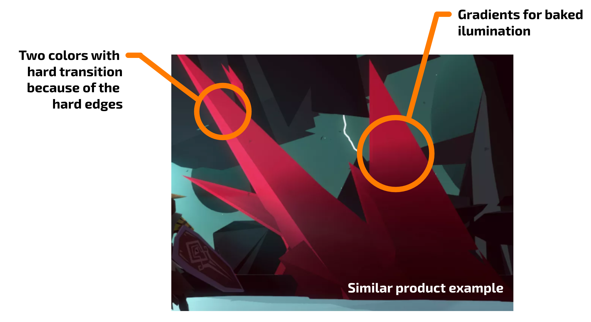
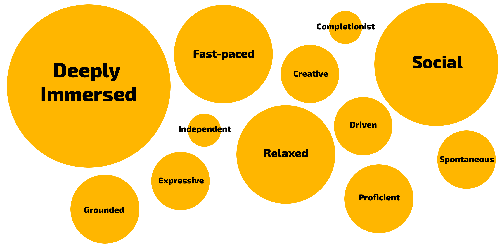
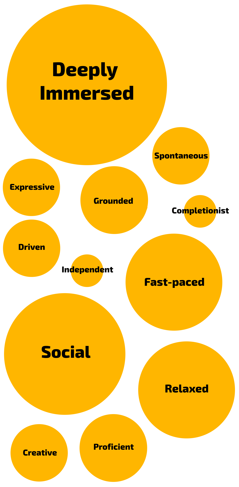
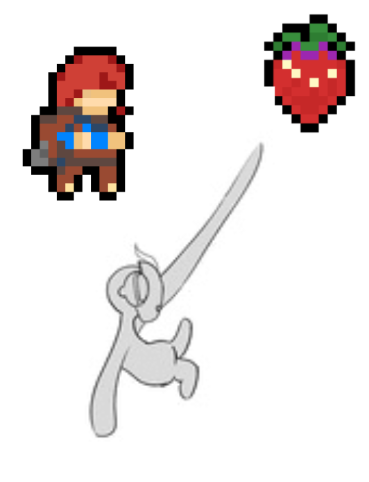

About what is coming
“SYNAPSE is about living a story-rich "Spider-man Rick and Morty’s episode” exploring a Metroidvania fantasy sci-fi 2D world.
Metroidvania games published per year
Metroidvania is a booming genre. In appearance, we see an increase in offer and stability in demand. The number of published indie Metroidvania games has increased a 30% since 2019. And almost a 50% since 2018. Despite this, the number of products with more than $100k estimated revenue in steam remains stable. Considering the representation of revenue per year, we estimate demand has increased a 31% since 2019 and a 55% since 2018.
| Year | Revenue | Estimated pending revenue | Total | Games >$5M revenue | Revenue games <$5M |
|---|---|---|---|---|---|
| 2020 | $33.8M | + $16.9M | $50.7M | 1 | $26.7M |
| 2019 | $14.9M | + $3.5M | $18.4M | 0 | $18.4M |
| 2018 | $34.5M | + $4.62M | $38M | 1 | $12M |
| 2017 | $37M | + $2.15M | $39.15M | 1 | $8.15M |
| 2016 | $43.1M | - | $43.1M | 2 | $21M |
| 2015 | $4.3M | - | $4.3M | 0 | $4.3M |
| Year | Estimated 2025 revenue | Games >$5M revenue | Revenue games <$5M |
|---|---|---|---|
| 2020 | $50.7M | 1 | $26.7M |
| 2019 | $18.4M | 0 | $18.4M |
| 2018 | $38M | 1 | $12M |
| 2017 | $39.15M | 1 | $8.15M |
| 2016 | $43.1M | 2 | $21M |
| 2015 | $4.3M | 0 | $4.3M |
By itself, metroidvanias are one of the genres with higher revenue cases by %.
In the future, new demands will arise for the genre. The market is already asking for this genre to evolve into a cooperative online mode. In the AAA world, we have already seen how the cooperative multiplayer modes of the souls-like games have succeeded. On the other hand, the games that metroidvania consumers have in common on steam are primarily online multiplayer. Finally, after taking the Quantic Foundry gambling motivation test on several users, we have perceived that the majority have between 50% and 60% social motivation. Being the cooperative factor more important than the competitive one.
There are very few metroidvania online coop. The appeal of this aspect is similar to the coop mode of games like Borderlands. The experience to share the exploration.
Estimated premium revenue
The art style on the market
If we had just a fantastic sci-fi environment with the cute essence of our characters it would need a bridge to get the attention of our public. Leaving aside the story-rich aspect, that bridge is the dark humor. My Friend Pedro, Rick and Morty, Bojack Horseman... Those are our references to add necessary dark touch.
Ori (Series)
Ori has a fantasy esthetic
similar to the
foundations on which we build our world. Besides, its
system of vertical movement and space between objects
is quite similar to our approach. Their combat system
is more casual than ours, which sits in a midterm
between a hack-and-slash and a souls-like.
The presence of a reference with this esthetic is
significant to us. Leaving aside that its target
audience is different from ours, our decision for a
sci-fi fantasy esthetic breaks with the usual adult
tone in the genre. Read the market tab for more info.
Hollow Knight
Hollow Knight is our main
reference in combat and
exploration. So it's specially
important to understand why customers are going to
choose our product.
The Metroidvania genre is constantly renewing and it's
a
genre that works well. Offering something new is key,
it
doesn't matter to have a clear reference if you:
1) Understand very well what makes it work.
2) You find a way to cause that effect with totally
different pillars.
These pillars are: The hook and verticality, the
online co-op
(there are very few online co-op metroidvania) and the
story-rich and humor aspect.
Bloodstained: Ritual of the Night
Bloodstained: Ritual of the
Night is not only another
example of the market interest in metroidvanias.
Leaving aside some ilumination and texture
problems, it features a well-integrated 3D art style
and
environment. Even being completely different, it is
such an important reference to our art production.
Blasphemous
A recent successfully souls-like
2D Metroidvania. This product does not 100% match with
our appeal, but it's a proof of the market interest.
It has a much slower pace and in general everything is
more serious.
Only in steam:
It has gotten 347.000 owners in 15 months.
With a current estimated revenue of $3,8M we
estimate a [#Calc error! Something
went wrong.]
five years term revenue.
KUNAI
KUNAI is really similar to our
product. Metroidvania 2D based on a hook movement and
fluid combat.
Only in steam:
It has gotten 3.000 owners in 11 months.
With a current estimated revenue of $70,000 we
estimate a [#Calc error! Something
went wrong.]
five years term revenue.
It was published by The Arcade Crew (mainly)
and Gamera Games (China). Consistent fact to our
geographic approach.
Our analysis
CARRION
CARRION is an examlpe of how original mechanics/roles
can boost your owners. Its appeal is to embody the
role of power. It focuses on giving you the feeling
that you are powerful. It has some similarity in the
movement, and the gamefeel that causes the fluidity of
its movement. Although executed in a very different
way, it is closely related to the appeal of our
product.
Only in steam:
It has gotten 397.000 owners in 4 months.
With a current estimated revenue of $3,6M we
estimate a [#Calc error! Something
went wrong.]
five years term revenue.
Super Cable Boy
Super Cable Boy has many things
we have implemented in a similar way. And this has
been shown after we implemented the same mechanics. A
full-control hook and the posibility to combine with a
dash in certain situations.
Unlike KUNAI, the difference comes from the video game
genre. Super cable boy is a linear short experience
that can be completed in an afternoon.
This product aims to a different target using
the some of our differential factors.
With its current sales figures we don't see it as a
threat, but rather an opportunity to collect data.
Webbed
Webbed seems to be the most
unreleased alarming competitor we have ever seen by
similarity
to our product. But looks are deceiving.
At this moment there is no public details about the
appeal and genre. So we talked directly with its
author, Riley Neville.
We will not reveal any information of Webbed.
But we both have firmly concluded that our target and
product appeal is different enough not to be worried.
Hollow Knight: Silksong
Due to similarity in appeal and target, Silkson will
be an important impact for us in the market.
Due to the popularity of its predecessor, we believe
this product will generate increased demand when it
cools down. Our release must be done once this product
at that moment.
The curse of the sea rats
An online co-op 2D hand-drawn
metroidvania in
development (in Barcelona!).
This product has rised $291.894
in Kickstarter. Proving the interest not only of
the market, but also of the investors.
The main hook of this product is its art style, not an
innovative mechanics.
Foley
Our goal with SYNAPSE is to craft a bountiful tapestry of sounds with which we can confer authenticity to the vivid and colorful universe of the game, as well as to append rewarding nuances to our elated game feel.We are thoughtfully working to achieve an ideal balance between science fiction and fantasy, with warm organic details and hi-tech bleeps and tinkles, without leaving behind the charming motif-oriented approach of the most inspired 8-bit and 16-bit icons.
All in all, our primary intention is to create a delightful and deeply immersive experience through a wise application of any kind of sound we could imagine.
Powerful perk activation
Enemy death 1
Enemy death 2
Tech environment activation
Music
Our view is to transfer an elevated yet decadent mood through huge ominous drones, classical instrumentation such as powerful string and brass sections, granular and atmospheric synth pads, sharp retro-inspired leads, and some industrial percussive elements.
The final outcome could be considered as a compelling dynamic and timbric blend of the best sound qualities and connotations of these two musical forms.
Epic battle example
Coliseum battle
Bittersweet emotional cutscene
WARNING!
This section is incomplete. We're working on expand this information.
Stay hooked! Subscribe to our newsletter to get boosted and receive updates.
Our worldbuilidng design processes always maintain the same
structure. All design of
environment starts from a base focused on silhouettes.
Then, we scale to a detailed designs. This technique is
optimal for our production values and visual style because
it allows us to capture the concept so that later in 3D, they
will be simplified without losing the essence.
We want to make a game environment, mainly sci-fi with heavy
doses of surrealism. We also drink from some fancy source, but
only tangentially. The doses of surrealism are constant and
coherent thanks to the iterative development of worldbuilding.
The best way to design a whole new world is to start from the
beginning. Every corner of the SYNAPSE universe is designed
iteratively and with great narrative focus. This is applied
both at the narrative and concepts.
Each civilization develops its own culture and affects the
environment based on its historical events. Once different
events occur between these civilizations, the world grows in
wealth exponentially. Every design iteration in the world is
the story of a generation. A story that ends in a world filled
with complex characters in shape and deep lineage.
The narrative direction is clear: we want a complex world that
shows itself through its characters' actions. That leaves room
for the player to experience and discover by themself. No
situation in SYNAPSE is black or white
We keep a simple organization by layers for all levels, being
very clear which layer would be post-processed, which layer
will be 3D, and these 3D layers what level of detail they
should have. Having strong silhouettes, especially on larger
world elements, is key in getting that atmosphere we wanted to
work with. The background must be a support, not an
impediment.
Examples of this - and partly because of the history behind
the creation of this game - would be FAR: Lone Sails, where
they use 3D assets in the background, very covered and
practically without textures in many cases. Our design
philosophy was evident: a cover of humor, large doses of
surrealism, weirdness, and clarity.
We work on narrative and visual concepts very closely until,
at a glance, you can know a lot about these characters without
having to know their stories. A clear example of this practice
is perfectly performed by Mad Max: Fury Road.
The use of color also points towards these points: saturated,
clear, but harmonious colors and always taking into account
the sum of its parts: clothing, assets, level, the world,
flora and fauna, and civilizations. They must share certain
patterns, whether in the palette or shape and that the player
can perfectly identify when he sees one of these elements in
the wild world, in the background on the level, or some memory
fragment.
That duality between humor and depth, between the simple
shader and the realistic atmosphere, is also an important
design decis+ion: we wanted to keep some elements very simple.
Others make them more complicated and rich, such as the visual
design of bosses and some parts of the world. We believe that
this stark contrast further accentuates the epic of the boss
encounters and further envelops the player in the world and
their exploration.
Examples of this duality and how it is embodied in SYNAPSE:
one of the first bosses that we have designed is a giant
creature that has a toaster and several arms as a body and
uses it as a weapon, and this will conflict with other enemies
you encounter in level, much easier and simpler in terms of
complexity. We want them to be very memorable fights, like,
for example, in Shadow of the Colossus. Despite that certain
level of complexity, we want to keep the world with a certain
stylization level.
Keeping the hectic pace constant is something we didn't want.
To maintain those uplifting moments and epic battles, there
must be peaks and valleys in the game's rhythm, and once
again, always support it from the art direction. Again,
simplest moments, almost banal, then move on to unique moments
and narrative hooks that turn the player around. Throughout
Metroidvania, it is essential to establish visual keys to
guide the player naturally through the level, without having
to open the map at all times.
These keys are directly related to narrative or humor elements
to create bonds with the player, either because it is fun or
because it is an asset that, by its nature, is more beautiful
and complex than those around it. Again, maintaining that
coherence and that duality in so many game elements, not just
visuals. SYNAPSE is a game that we want to catch you.
With a strong sense of aesthetics and a deep narrative, and
with surreal elements that create the jarring note in the
world and the story, SYNAPSE is an ambitious game that has
symbolic parts without reaching allegory, with a story full of
gray and with very crazy and funny moments that we hope will
meet the expectations of the most demanding.
The artistic style is based on
representing objects through
shapes defined by hard colors. With the presence of blurred
backgrounds, lights and effects. The scene elements will be
in 3D and 2D for some background assets.
The shapes of each object are defined with 2-4 colors through
a cell-shaded material. The difference between colors is hard,
but there are baked color gradients for illumination.

All the elements in the playable layer must be easily
identified. The foreground will use more saturated colors, and
the background must be clearly desaturated. The background
will be a little bit blurred in the farthest layers.
The objects will have an interactive outline. This outline
will have different collors depending on the close entities.
There are entities (beings or interactive objects) that will
have an outline influence in a radius. Affecting its color by
distance.
We will use procedural modeling techniques with Houdini to
Boost the environment production speed.
The old version of SYNAPSE.
We currently do not have advanced frames of the game. But we
did! Due to the Boost Tools deadline problems explained in the
About Surreal Boost section (below), we faced difficult
crunch-times
that
pushed us to have a bad quality of code. So in order to fix it
we
started
a remake with the Boost Tools developement to become scalable
and predictive.
At this moment we can show how the old version of SYNAPSE
looks. But there are many compositional errors to solve.


Similar products user motivations average
Learn more
 
Target platforms: PC, Switch, Playstation and Xbox
Controls
Schemes
We've observed two archetypes of players in the playtests. There are those who come with the preconceived idea that the aiming with the hook and the movement must be controlled with the same joystick. Others, however, have the opposite preconception. They think that each joystick should control a different action.
That is why we have designed a hybrid system that satisfies both types of players. If the player only moves the movement joystick, the aim will go in the direction that the left joystick(movement) indicates. However, if the right joystick is active Gaard will point in the direction it indicates. Motion aiming can be disabled from the menu.
- More Schematics, easier to learn.
- Less control on Aim.
- More control on Aim
- Requires more precision (Optional challenge)
- Hard to learn
Health and stamina pickup system
Recovery of life and stamina are ultra-powerful extrinsic motivation elements. The gameplay design must keep these elements linked with the core game pillars that generates intrinsic motivation. These are exploration, combat, and agility. The health can be recovered by hitting or grabbing life points in the air. These life points will appear randomly before hitting or killing an enemy. If the player does not do it fast enought, the life point will disappear. Turning regeneration into a small challenge. Stamina is recovered by hitting any enemy with melee attacks.
Long-Time rewarding system
We want to create a world full of rewards. For this we have a rune-based skills-tree system. Each rune has an effect on the player and there are combinatorial effects. Some runes a higher impact on their effects, but their compatibility with slots forces the player to find the optimal strategy. Depending on the player's playstyle or situation, everything can be useful.
Objects of extrinsic motivation
- Suits: These are clothing that Gaard can equip.
- Masks: Modifies the shape of Gaard's mask and some physical attributes.
- Skills (runes/gems): These are part of the mechanics of the game and can be unlocked with the progression in the campaign or exploration.
- Trophies / Achievements associated with the platforming and combat (Example: Arena mode).
All the game saves will have a death and hit count. Also the time played will be shown.
We will use the breadcrumbs trail / candy path technique as the principle for extrinsic motivation design. So when the player finishes achieving a goal, they sees himself about to get another.
Skills & Stats
Constant abilities
Payer hit: The player has a melee attack. It can only be used when they is not attached to any surface. While the player is hitting an enemy they stands in the air for a period of time. Concatenating blows very often will cause the player to not fall so they will keep hitting. This mechanic has been tested and produces a lot of motivation in the player to press the attack button very quickly.
Dash: The player can dash to the direction where they points. It recharges for time. It can be used both when they is hooked and when they is in the air.
Hook: The player can hook onto surfaces with 1 or 2 hooks and swing to move through the level.
Stats
Health: It works by discreet hits. Maximum of 6-9 lives.
Stamina: It is the energy with which some skills can be used. It regenerates making melee hits to any type of enemy.
Skills by stamina
These are some examples of skills that consume stamina. Some of them can only be used with the proper runes equipped.
Energy shot: Shoots a projectile in one direction. This projectile has different effects depending on the surface on which it impacts and the runes equipped. It can only be shooted when the player is in the air without being hooked.
Secondary Dash: A dash of smaller range but faster. It can be concatenated with the normal dash. Second tab to the dash button to active it. Doesn’t conserve the momentum. This skill can be only used with the proper runes equipped. The movement pattern of this skill can vary by the runes combination.
Ghost mode: While it’s activated, if Gaard goes through little obstacles (not walls) and some type of projectiles, they can cross it without taking damage or collision. This skill can be only used with the proper runes equipped.
Wrecking ball: When it’s activated while grabbed, Gaard performs a circular movement circling the point where they is tied while damages everything they touches. (Holding the Energy shot button while hooked)
Radial attack: Attack to make radial damage to all enemies close to Gaard. This skill can be only used with the proper runes equipped. The effect of this skill can vary by the runes combination.
Stats modifiers
These are some examples of runes that modify the stats of the player.
Gunpowder on the knuckles: After eliminating an enemy with a normal melee attack, all your melee abilities will deal n% more damage for m seconds.
The last spark: Increases the duration of Gunpowder on the knuckles.
Perpetual essence: After defeating an enemy you have a chance that Perpetual essence will activate. With perpetual essence active, no skills will consume stamina for 6 seconds.
Mushroom jumper: Defeating an enemy from above will always yield a point of health. The probability of generating health points in other circumstances decreases dramatically.
Vengeful spirit: As less health you have, you do more damage you will do to enemies with all your abilities.
Interactive objects of the environment examples
- Energy Ball & portable objects: Some enemies drop a ball of grabbing energy that can be thrown as a projectile. Some small enemies are grabbed from their backs, so dodging them can be used as a weapon.
- Grabbable Surface: They may or may not hurt by touching us. Some of them can be a mechanism that is activated by grabbing it. Those activations can produce movement.
- Non-Grabbable Surface: They may or may not hurt by touching us.
- Impulsor box: If the player hits them they will get impulsed in a direction.
Learning phases
Phase 1 - Movement tutorial & basic attack: We have noticed in the prototype tests that it takes a long time for players to gain mastery with the hook. However, this process causes a lot of intrinsic motivation. There must be a prolonged phase of the game that ensures the player can move smoothly through any scenario. Very few complex enemies should be presented simultaneously in this phase.
Initially, it focuses on very simple agility/precision challenges until enemies are presented in low quantity.
Phase 2 - Beginner: Elements are gradually introduced to make players handle various stimuli simultaneously with the movement of the hook. At this point, the player has obtained/obtains the first skills that add complexity to the gameplay. (Dash, energy shot...)
Phase 3 - Medium: The player is taught more skills. Get enough statistics and mastery to start facing large-scale fighting in the number of enemies.
Phase 4 - Mastery: The most challenging gameplay challenges are presented through bosses and battles.
Phase 5 - Completism: The sensation of flow focuses on the narrative / extrinsic motivation aspects.
OIT Progesion (Organismic Integration Theory)
Introjected
Intrinsic
Intrinsic
Integrated
Introjected
or extrinsic
Flow channel
Relaxation, Control, Anxiety, Arousal, Flow
Control, Flow, Arousal
Control or Arousal.
Eventually, Relaxation or Boredom.

“Difficulty Curves Start
At Their Peak”
By Jon Brown on 09/22/10. Gamasutra
Story integration
You can have a great idea. But no matter how interesting the events you want to tell are if you don't know how to properly integrate them into your product. If that is your case, it will be perceived as a poor story. In Surreal Boost we know this well, so we have dedicated a long time to compare and choose the best option.If you readed the game story biref, you already know that there are two principal narrative sources of information:
- Forgotten memories returning to the minds of our protagonists.
- Events in the world and interactions between characters.
Forgotten memories
Without a budget that allow us to produce voice dialogs, we needed to find a unique way to communicate these events. As it seems, the most complicated part was the forgotten memories. We wanted to find a way to integrate into the world and make it yet another exploration reward. But we did not want the typical letters of lore.We had to find a visual and unique way. So we designed a stain / glitch shader to integrate all the memories into the world.
These spots are like a hole in the world. It works as "portals" that allow us to see what is happening in our memories. All memory will be a triggeable objet with dialogs.
Dialogs and scripted events
The dialogs will occur within text and narred by onomatopoeias associated with the emotional charge.There will be also scripted events like "cutscenes". The main reference to understand how it is going to work is Celeste.
Game story
SYNAPSE is a story rich tragic comedy. Two completely opposite personalities wake up in a fantasy sci-fi and hostile environment where nothing seems to make sense. For some strange reason, they cannot be separated. Gaard and Erwin must explore the world to recover the memories of their past life. Eventually, they will discover what happens after death and how to change it affecting all the world through a one-use-only artifact. The conflict is born from the competition to attain find get able to execute this power before others would for selfish purposes. But any decision has huge consequences. Stopping the reincarnation flux would imply altering or even erasing all memories about the current life. All characters have a different opinion of what to do with this great power.
In a second truth revelation, they will discover an old society in its tech apogee. When the reincarnations flux began. There seems to be no trace of this civilization beyond recovered past lives memories. In this civilization, Erwin was the CEO of a technology company during its first life. Obsessed with saving the life of her sick son (Gaard), she discovered that the only way to elude death is to become a part of a greater being. At least, to be complex enough for the original body to be insignificant and let it die. So Erwin decided to manipulate the code of the project SYNAPSE. An internet network directly connected with thoughts. She overrode all the minds of the entire planet to turn them into cells of a planetary brain. Like neurons, expanding the connections to all the universe. Growing in complexity. With this, she turned all humanity into an infinite dream with the only condition in the algorithm to stay always along with its son’s mind.
SYNAPSE, all the entry world we knew is a collective dream created by the consciences of all mankind. But something went wrong. Out of all the neurons, a mind began to emerge. The artifact is actually the “connected mind”. A consciousness that emerges from the imitation of a neural structure. The mind of a nascent sleeping god. Some want to take his place, others to restore their original lives and others to protect him to preserve the world created in SYNAPSE.
But not everything is what it seems. Erwin was hiding a secret. Her true intentions were not to create a world where all minds could coexist but to turn their consciousness and that of his son into that interplanetary brain to become an immortal being. To enjoy all replicable pleasures until the last breath of the cosmos. SYNAPSE, the shared dream, was a miscalculation. And she will try to manipulate us to eliminate the god nacience and take its place. All she did was save our life. But not with pure intentions. Drawing the silhouette of an obsessive personality, with contempt for society and panic at the loss of control.
Presence of humor: The game will be developed with a constant sarcastic tone and casual attitudes. Eg: Cayde-6 of Destiny 2. However, the world takes itself seriously and every constant humorous tone will be due to the personality of the characters. We don't want to overload the player with unnecessary jokes. It will only be intended to make the player laugh unexpectedly.
Gaard & Erwin
We will never hear Gaard's voice or get to know him well. However, by design, it's the character with more expressiveness and charisma. Humanoid character.
It communicates through noises and facial expressions. INFP. Erwin acts as a "companion element". His personality transits from a similar to one like Cayde-6 of Destiny 2 to another more like Rick Sanchez of Rick & Morty. ENFJ to ENTP.
She is really smart. Her behavior is clearly dominating using foul words frequently. She guides Gaard during the course of the story. Even though Gaard has more strength and he could dominate the relationship.
Core game pillars
- Grappling hook as a movement mechanic and agility challenge base.
- Fight and dodge swinging or using a dash.
- You can’t touch some surfaces.
- Hitting or using airborne skills.
- Complex unseen AI.
- Co-op online.
Verbs: Hook, Attack, Dash, Shoot, Grab, Throw, Walk, Jump, Slide
40% exploration
We want to
build a world with plenty of secrets and rewards. Our
skill tree system allows us to distribute a lot of runes
and rewards that allow the player to explore not only the
world but different styles of play.
We want the player to
feel curiosity and the need to explore every corner. Our
buyer persona greatly appreciates crafting, resource
gathering, and customization. We want each unexplored step
to act like a lootbox. Our art must allow the player
to make a clear mind map to keep unexplored areas in their
memory and to enhance the Metroidvania dynamics. We
achieve this through visual elements and sounds that are
very easy to remember.
40% combat
Taking
Hollow Knight as the main reference for the combat, it
becomes the most intense aspect of intrinsic motivation.
our product squeezes out a lot of the souls-like factor,
but it's a slightly more relaxed hack-and-slash.
An
intermediate point between Hollow Knight and Ori.
The player is constantly pressured to react to different
stimuli, and they always has different options to fight.
This
system focuses mainly on melee attacks and secondly ranged
attacks. Each combat is an agility challenge in itself.
20% agility challenges
As Celeste does well, many optional rewards are gotten through agility challenges. These are short-lived just like one-two Celeste room.
Experience
We offer an experience based on the intrinsicality of the movement with the hook and aerial (vertical) combat. Adding elements as enemies that fly, shoot or even use their own hook to progressively turn this dynamic into a pseudo-bullet-hell. The gameplay is based on grab on surfaces and swinging. You can use skills in the air or fire energy shots.
Flow: It is the main
objective of our level design (especially while exploring).
Control & relaxation:
These are rest areas or some exploration and re-explorations.
Anxiety or Arousal:
Some players may experience difficulties in the most difficult
battles. Our priority however is that Anxiety does not arrive.
The game will come to pose really advanced challenges, but it
will ensure that the player has obtained enough mastery to not
enter into a state of anxiety. Otherwise, the player must have
another extrinsic motivation to postpone its current goal in
case it’s too difficult. The only reason to join in anxiety
should be: The player is not the target. Or: The player has
not played for a long time and has lost the necessary mastery.
A lot of studios start
having the idea, then
trying to justify its market approach. We think
data drive the best way to make decisions. And
what we did was research and prototype 7
different ideas. Some examples of our
experimentation were mobile race games, mobile
golf-like games, low-scope MOBAs, tower defense
or
scary games.
Studying the market to understand how each genre
work and looking for emergent tendencies. We got
our prediction right when Metroidvania games
weren't booming.
After testing each prototype with real users, we prioritize and choose which we believe can fit our approach better. Then we started the TDD and deciding how the product is going to scale.
Then we defined the values
of our company to
build our team. We did great human resource
work, although it was challenging. Many teams
start being a group of inexperienced students
without budged who does the game only for
passion. And that was one of our biggest
problems to deal with.
Fortunately, thanks to
our values and clear vision, we consolidated a
great team. We have built a healthy work
ecosystem but focused on productivity. The
second key of succes was our
habit of socializing as much as possible in the
industry. We like to keep abreast of other
people's progress and share feedback. That gave
us a lot of options, being a surreal boost to
us!
Initially we started developing the main features of the game. But we noticed about the caracteristic unpredictable in long term scope. Analyzing the situation in one postmortem, we decided to develop what we call Boost Tools. A collection of tools that allow us to speed up our production and integrate the most of entity development in the same workflow and processes. Also making the development scalable and predictive. We have accumulated most of uncertainty in the first (and passed) stages.
The vertical slice can be developed with a
budget of $12.000. It must be done within the
facilities of an incubation program.
Our main target is GameBCN 6 program. But we
also have analyzed Playstation Talents, Level Up or
PowerUp (rocketgames.dev).
Once the vertical slice is finished and only
for the product development, we will need a
total amount of $ 175,000.
We have analyzed 8 crowdfunding platforms. Of
these, we did a second, deeper analysis of
Kikstarter, Indiegogo, GoFundMe, and Patreon.
Based on the type of products, similiraty,
frequency of competitors, and success rate, we
determined that the ideal would be to run two
independent campaigns. One on Kikstarter and one
on Indiegogo. With this, we can aspire to raise
between $ 100K and $ 200K once the vertical
slice is finished.
With an initial funding base, we can use
financing lines or 20-40% development financing
from publishers.
Based on the opeedn registrations in 2019 and
2020, we
foresee that our main candidates are:
- “Línea de préstamos participativos para jovenes empresas ICEC”
- “Préstamo ENISA (línea emprendedores o línea jóvenes emprendedores)”
- “Red.es ayuda de carácter dinerario destinadas a financiar proyectos de desarrollo, comercialización e internacionalización de videojuegos.!
- “Europa Creativa (MEDIA) Suport al Desenvolupament de Videojocs Europeus”
We do not plan to have payed DLCs for SYNAPSE. Updates for bug fixing or little improvements are required.
Mission
Making enriching surreal worldsVision
Surreal Boost is not just about telling stories. We want to contribute to the state of the art on a technical and esthetic level. We seek innovating with unseen technical, narrative and artistic approaches.Values
What working at Surreal Boost must be
All workers have different super-powers and each shoots its own rays. But specialization can be a silent trap. Always doing the same will, eventually, lead to stagnation, affecting growth as a professional, and as a person. This is the first step to fall into indifference. Any high-performance team must be motivated and believe that what they do is meaningful for themselves and for the company. So how Surreal Boost materializes its mission must be compatible with the growth of any worker.It is undeniable that there will always be repetitive tasks. Therefore, this sentence must be realistically executed without putting the interests of the company at risk. But also this is one of our highest priorities.
Introducing new technologies, improving our approaches over time, changing our roles, and understanding others' tasks.
Hierarchy
Decisions are important for an effective and productive team. Any team member can make any proposal, and many decisions are debated. However, this doesn't mean that our workflow is a democracy.All tasks have one person in charge selected from production. The criteria of choosing who is responsible for each task are based on the knowledge and capability to make decisions driven to the company's interests within the task. The person responsible for the task has the last word about the decisions.
Production team members can impose decisions on those in charge. Executive team members can impose decisions on production team members or those in charge. However, this is not ideal. Instead of a constant overriding of opinions, we believe that it’s important to ensure that all team members have a global vision of the priorities. Although, given that prioritization is inevitable in a productive environment, any decision imposition must be explained. The only reason for not doing this is not to violate any confidential agreements.
Discrepancies in the executive team have their own priority mechanism. Those mechanisms are confidential.
Decision meetings must be done with the related workers, which can also imply production team members. Meetings are expensive because you are using many worker's time in one single action. All Surreal Boost members must choose wisely whose time asks.
Team building
A team is not a family, but it can be special. A team is a talent group that believes in one mission, sharing the experience of executing a vision while learning and enriching. Team lifetime has layoffs and priorities, but being part of a good team is always beautiful.We care about healthy and good communication. So at least once every three months we organize cohesive group activities. These activities are designed to encourage all team members to interact with each other.
Covid-19
Our activity does not vary between remote and present work. We believe that having a place to be is an important psychological feature. So what we do is simulating this through a discord server and slack. Each voice channel represents a room or workspace. We always use the same schedule format regardless of being on-site.The scale of the company
Applying the values of a company is more difficult as it grows. Becoming a bigger company would mean becoming a different company. Our maximum number of workers to keep these values is 27 workers.Major conflicts
Matters must be resolved in a civil manner. Unresolved conflicts must be brought to supervisors. These must always be resolved by meeting with an impartial mediator from the executive team or human resources.Any proved altercation, psychological abuse, sexual harassment or any disfunctional event considered as a major issue would imply immediate dismissal. Any evidence of these events must be studied and registered. The designation of this study is in charge of the human resources team. Before the start of the study, urgent precautionary measures must be approved and applied until the resolution of the study. If there is no consistent evidence after the study, the executive team and the human resources team will make pertinent decisions.
Crunch-time
Mental health is important. Surreal Boost must contribute in a positive way to its workers. The only workers allowed to do crunch are the founders. Extreme situations can be faced with extra hours during a maximum period of three weeks only if the worker agrees on it. Never as a requirement. Always with extra rest days after the deadline. After any situation like this an emergency postmortem must be done immediately (once the deadline is reached). The causes must be analyzed and an act of caution measures must be approved.Definition of extreme situations: Extreme situations are situations in which the future of the company depends directly on the fulfillment of a deadline. The consequences of this impact may involve the possibility of closing the company or losing an exceptional opportunity. Failing to predict a sprint is not an extreme situation.
Definition of exceptional opportunities: Something that can positively affect the company. This impact's estimated value must have an equivalency higher than $10.000, and the executive team must approve it.
Executive team role
The executive team has only one mission: Bringing stability and security to the company. Workers must not be worried about the complications of managing a nascent startup, they must focus on production without being afraid. The executive team must eliminate any trace of uncertainty. Also, we do not want to hide anything. Insofar it does not imply justified confidential agreements all workers need to have a clear understanding of the direction of the ship.Processes approach
The following precepts must drive all our decisions:- We are a company.
- We are scalable.
- Our product is scalable.
- Development is predictive within agile methodologies.
- Marketing is important.
Surreal Boost is about scalable development of games through predictive processes following data-driven decision-making criteria. We also truly believe marketing must concern us during the developement.
We are SURREAL BOST, an independent videogame development studio from Barcelona created by two students from the Degree in Digital and Interactive Content Development, Videogames and Programming at ENTI.
In a live-action game, developing with predictive scopes
is
difficult. You might bet for a specific implementation
that
doesn't show the desired gamefeel results. Then having to
go
back and re-do an entry new system. Our game stands out
for
its complex AI. So this caused many sprint planning
problems.
For this reason, we decided to agglutinate much of the
uncertainty in the early stages of development. So we have
developed what we call Boost Tools. This allows us to
implement all our interactive entities with the same
processes
and with all sub-features pre-developed.
These are: CAIL (a Complex AI Library, which contains the
necessary functionalities to crate any type of 2D AI),
CAILGraphEditor (a node-based visual editor to create
behaviors with CAIL), and AIL Dynamo (a visual movement
pattern editor and combiner compatible with
CAILGraphEditor).
Imagine that tomorrow your company will receive 25 new
employees. Would they be able to work without any doubt?
Good
documentation is key. And the solution is to keep updated
TDD, NDD,
Art
Bible, and an Art production guide.
Agile methodologies are the core of any predictive
developement. For a long time we
have used Kanban (during the Boost Tools development). We
chose Kanban because does not
make sense to use a methodology based on deadlines during
a
I+D phase. Now, being our priority adding value to the
product
we are
switching to a scrumban methodology called T3.
Team core
Passionate talent working every day.

Adrián Hernandez
Art director,
3D modeler

Albert Padilla
3D modeler,
animator

Èric Garcia
Developer, game designer,
co-founder.

Pol Surriel
E. producer, developer,
co-founder
Collaborators
People who add value every week.

Antoni Vela
Sound designer

Clàudia Garcia
Marketing

Daniel Valladares
Music composer

Míriam Spinelli
Music composer
They know us well
Mentors that trust in us. And you may know them!

Pere Rius
COO, LinceWorks

Richard Hebert
ENTI Coordinator

Oscar Garcia
CEO, CookieBox
Ben Kleber
Art direction mentor

Eduard Arnau
Timepath, developer
Stay hooked, suscribe to our newsletter
Waiting for the closed beta? Stay informed and be the first to find out.